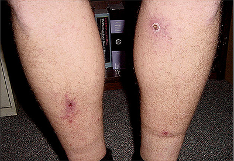

Introduction
In addition to Rickettsia rickettsii, the agent of Rocky Mountain spotted fever (RMSF), several other tick-borne species of Rickettsia, broadly grouped under the heading "Spotted Fever group Rickettsia (SFGR)" have been shown to cause human infections. Tick-borne SFGR are transmitted to humans by the bite of an infected tick, and may cause similar signs and symptoms to those observed for RMSF. These pathogens include several species of Rickettsia found in the United States, including R. parkeri and Rickettsia species 364D (Table1). In addition, numerous tick-borne SFGR pathogenic to humans have been described internationally, including but not limited to R. conorii and R. africae (Table 2). Travelers may be at risk for exposure to these pathogens when engaging in behaviors that place them at risk for tick exposure, and physicians should maintain awareness of these diseases when a patient presents with a febrile illness within 2 weeks of returning home. Rickettsial infections with R. africae have been reported as a common cause of fever in travelers returning from South Africa.
| Species | Tick Vector | Geographic Distribution | Clinical Symptoms |
|---|---|---|---|
| Rickettsia parkeri | Amblyomma maculatum (Gulf Coast tick) | Eastern and southern U.S., particularly along the coast | Fever, headache, eschar(s), variable rash |
| Rickettsia species 364D | Dermacentor occidentalis (Pacific Coast tick) | Northern California, Pacific Coast | Fever, eschar(s) |
| Disease | Species | Geographic Distribution | Clinical Symptoms |
|---|---|---|---|
| Rickettsiosis | Rickettsia aeschlimannii | Africa, Mediterranean region | Fever, eschar, maculopapular rash |
| African tick- bite fever | Rickettsia africae | Sub-Saharan Africa, West Indies | Fever, eschar, maculopapular rash |
| Queensland tick typhus | Rickettsia australis | Australia, Tasmania | Fever, eschar, regional adenopathy, rash on extremities |
| Mediterranean spotted fever or Boutonneuse fever | Rickettsia conorii‡ | Mediterranean region and Africa to Indian subcontinent | Fever, eschar (usually single), regional adenopathy, maculopapular rash on extremities |
| Far eastern spotted fever | Rickettsia heilongjiangensis | Northern China, Eastern Asia | Fever, eschar, maculopapular rash, regional adenopathy |
| Aneruptive fever | Rickettsia helvetica | Central and northern Europe | Fever, headache, myalgia |
| Flinders Island spotted fever, Thai tick typhus | Rickettsia honei | Australia, Thailand | Mild spotted fever, eschar and adenopathy are rare |
| Japanese spotted fever | Rickettsia japonica | Japan | Fever, eschar(s), regional adenopathy, rash on extremities |
| Australian spotted fever | Rickettsia marmionii subspecies |
Australia | Fever, eschar, maculopapular or vesicular rash, adenopathy |
| Rickettsia massiliae rickettsioses | Rickettsia massiliae |
France, Greece, Spain, Portugal, Switzerland, Sicily, Central Africa and Mali | Fever, maculopapular rash, necrotic eschar |
| Rocky Mountain spotted fever, febre maculosa, Sao Paulo exanthematic typhus, Minas Gerais exanthematic typhus, Brazillian spotted fever | Rickettsia rickettsii | North, Central and South America | Fever, headache, abdominal pain, maculopapular rash progressing into papular or petechial rash (generally originating on extremities) |
| North Asian tick typhus, Siberian tick typhus | Rickettisa sibirica | Broadly distributed through north Asia | Fever, eschar(s), regional adenopathy, maculopapular rash |
| Lymphangitis associated rickettsiosis | Rickettsia sibirica mongolotimonae | Southern France, Portugal, China, Sub-saharan Africa | Fever, multiple eschars, regional adenopathy and lymphangitis, maculopapular rash |
| Tick-borne lymphadenopathy (TIBOLA), Dermacentor-borne necrosis and lymphadenopathy (DEBONEL) | Rickettsia slovaca | Southern and eastern Europe, Asia | Necrosis erythema, cervical lymphadenopathy and enlarged lymph nodes, rare maculopapular rash |
‡ Includes 4 different subspecies that can be distinguished serologically and by PCR assay, and respectively are the etiologic agents of Boutonneuse fever and Mediterranean tick fever in Southern Europe and Africa (R. conorii subsp. conorii), Indian tick typhus in South Asia (R. conorii subsp. indica), Israeli tick typhus in Southern Europe and Middle East (R. conorii subsp. israelensis), and Astrakhan spotted fever in the North Caspian region of Russia (R. conorii subsp. caspiae).
Symptoms
Figure 1: Inoculation eschars associated with the site of tick attachment in a patient infected with R. parkeri. Click for a high resolution image
The initial symptoms of tick-borne SFGR infections generally include fever, headache, fatigue, and muscle aches. A maculopapular or petechial rash may be present, and frequently a distinctive eschar (blackened or crusted skin) may develop at the site of a tick bite. Multiple eschars may be present if more than one tick bite occurred. The observance of an eschar at the site of tick bite may provide the clinician with a diagnostic clue that can help differentiate the infection from RMSF, although eschars may also be rarely reported with R. rickettsii infection. The severity of illness may vary depending on the species. For example, human infections with R. parkeri and R. africae are generally considered mild and to some extent self-limiting infections. In contrast, R. conorii and some other SFGR infections may be more severe. Prompt treatment with doxycycline is recommended if tick-borne SFGR is suspected, and should never be delayed pending the outcome of diagnostic tests.
Diagnosis
Different SFGR pathogens cause immune reactions in humans that can be difficult to distinguish with antibody-based laboratory techniques. Because these agents exhibit serologic cross-reactivity with available tests for R. rickettsii, some human illnesses currently being attributed to RMSF in the United States may actually caused by other SFGR, such as R. parkeri, Rickettsia 364D, or imported spotted fevers.
Although the severity of infections attributable to SFGR vary greatly depending on the causative species, all suspect patients should be treated as if they have R. rickettsii infection. Physicians seeking confirmation of infection with a SFGR pathogen may elect to use commercially available serologic assays that diagnose RMSF, and should report it as a case of “Spotted Fever Rickettsiosis” to their state health department. Additional methods that may be used to help identify the causative agent include polymerase chain reaction (PCR) assay, immunohistochemistry (IHC), and culture isolation of a swab or biopsy from an eschar or rash site. Specimens should be submitted to the state health department in the state where the patient resides, who can submit the samples to CDC for testing. For more information, see In Depth Information on RMSF.
Treatment
Tick-borne SFGR infections respond well to treatment with doxycycline, and this is considered the antibiotic of choice for patients of all ages.
Recommended Dosage
Doxycycline is the first line treatment for adults and children of all ages:
- Adults: 100 mg every 12 hours
- Children under 45 kg (100 lbs): 2.2 mg/kg body weight given twice a day
Patients should be treated for at least 3 days after the fever subsides and until there is evidence of clinical improvement. Standard duration of treatment is 7 to 14 days.
Be sure to tell your physician if you become ill within 2 weeks of a tick bite or exposure to ticks, either within the United States or internationally.
Prevention of Other Tick-borne Spotted Fevers
The best prevention is to prevent tick bites. Information on preventing tick bites includes use of personal insect repellents, choosing clothing that limits tick attachment, and avoiding areas where ticks may be present.
Suggested Reading
McQuiston , JH. "Imported spotted fever rickettsioses in United States travelers returning from Africa: a summary of cases confirmed by laboratory testing at the Centers for Disease Control and Prevention." Am J Trop Med Hyg 70 (2004): 98-101.
Paddock CD, Finley RW, Wright CS, Robinson HN,Schrodt BJ, Lane CC, Ekenna O, Blass MA, Tamminga CL, Ohl CA, McLellan SL, Goddard J, Holman RC, Openshaw JJ, Sumner JW, Zaki SR, Eremeeva ME. Rickettsia parkeri rickettsiosis and its clinical distinction from Rocky Mountain spotted fever. Clin Infect Dis, 2008; 47:1188-96.
Contact Us:
- Centers for Disease Control and Prevention
Rickettsial Zoonoses Branch
Mail Stop G-44
1600 Clifton Rd
Atlanta, GA 30333 - 800-CDC-INFO
(800-232-4636)
TTY: (888) 232-6348 - Contact CDC–INFO